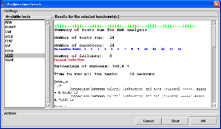

Next: About nMOLDYN
Up: The Help menu
Previous: API
Contents
Analysis benchmark
The purpose of this option is to test the stability of most of the analysis provided by the running version of
nMOLDYN versus the results produced by the intensively tested version 2.2.5. As nMOLDYN is an open source program,
this option can be interesting for experienced users that may have brought some changes in a given analysis and that
would like to insure that its scientific contents is still valid.
Pressing the Analysis benchmark button will pop up the dialog shown on figure 4.69
Figure 4.69:
The dialog from where the analysis benchmarks can be run.
|

|
From this dialog, one can select on the left panel one or many analysis benchmarks. If you want more information about
the contents of a given benchmark, right-click on one of the benchmark. This will pop up a small informative dialog.
Pressing the OK button will run the benchmark. Depending on the selected analysis, you may wait a little bit before the
results will be displayed on the right panel with a detailed statistics about the tests that have been run and the results
obtained (e.g. number of tests run, percentage of success, time taken for the benchmark ...). For the tests that
failed, clicking on the test number will pop up a window where the settings for the current version and the reference version
are displayed for comparison.
The currently available benchmarks are:
- ARA for ARA analysis,
- AVACF for AVACF analysis,
- DCSF for DCSF analysis,
- DOS for DOS analysis,
- EISF for EISF analysis,
- DISF for DISFanalysis,
- DISFG for DISFG analysis,
- MSD for MSD analysis,
- VACF for VACF analysis,
Next: About nMOLDYN
Up: The Help menu
Previous: API
Contents
pellegrini eric
2009-10-06